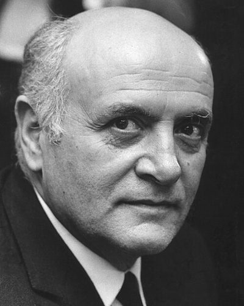

Ideologies / Liberal
What is European Federalism?
European Federalism is a political ideology in the Liberal family. Written by anti fascist prisoners on an Italian island, the manifesto blames the absolute sovereignty of nation states for war and totalitarianism. The real dividing line in politics now runs between those who would restore national states and those who would create a European federation with its own armed force in place of national armies. It couples this with social reform: monopolies and key industries taken into public hands, land and wealth spread more widely, and a secular state.
End the sovereign nation state in Europe and build a federation in its place.
Defined from: Altiero Spinelli and Ernesto Rossi, For a Free and United Europe: A Draft Manifesto (the Ventotene Manifesto) (1941)
See how close you are to European Federalism Dare a friend to answer as one


Where European Federalism stands on 13 axes
Each axis runs from 0 to 100. A score of 50 is the middle. On a classic compass it sits in the Libertarian Left quadrant.
| Axis | Position | Score | In words |
|---|---|---|---|
| EconomyMarket to Planned | 60 | Leans Planned | |
| OwnershipPrivate to Collective | 55 | Balanced | |
| RightsLiberty to Security | 30 | Strongly Liberty | |
| GovernmentDemocracy to Autocracy | 30 | Strongly Democracy | |
| StructureDecentralised to Centralised | 70 | Strongly Centralised | |
| NationInternationalist to Nationalist | 0 | Very strongly Internationalist | |
| ImmigrationMulticulturalist to Assimilationist | 30 | Strongly Multiculturalist | |
| ValuesProgressive to Traditional | 15 | Very strongly Progressive | |
| TechnologyAccelerationist to Precautionary | 30 | Strongly Accelerationist | |
| EnvironmentIndustrialist to Environmentalist | 35 | Leans Industrialist | |
| ReligionSecular to Religious | 5 | Very strongly Secular | |
| MilitaryPacifist to Militarist | 45 | Balanced | |
| TradeFree Trade to Protectionist | 25 | Strongly Free Trade |
Ideologies closest to European Federalism
- Open Society Liberalism82% alike
- Eurocommunism82% alike
- Keynesian Liberalism82% alike
- New Liberalism82% alike
- Social Democracy82% alike
Its opposite on this map is Kokutai Thought, at 29%.
Parties near European Federalism
- Russian Social Democratic Labour Party of 1903Russia. Programme of the Russian Social Democratic Labour Party (1903)81% alike
- Socialist Party of AmericaUnited States. Socialist Party Platform (1912)80% alike
- Social Democratic Party of GermanyGermany. Hamburg Programme (2007)80% alike
- Socialist Party of PortugalPortugal. Um Novo Impulso para Portugal (2025)80% alike
Common questions
What is European Federalism?
European Federalism is a political ideology in the Liberal family. Written by anti fascist prisoners on an Italian island, the manifesto blames the absolute sovereignty of nation states for war and totalitarianism. The real dividing line in politics now runs between those who would restore national states and those who would create a European federation with its own armed force in place of national armies. It couples this with social reform: monopolies and key industries taken into public hands, land and wealth spread more widely, and a secular state.
What does European Federalism believe?
In one line: End the sovereign nation state in Europe and build a federation in its place. Its strongest positions are Internationalist, Secular, Progressive. Written by anti fascist prisoners on an Italian island, the manifesto blames the absolute sovereignty of nation states for war and totalitarianism. The real dividing line in politics now runs between those who would restore national states and those who would create a European federation with its own armed force in place of national armies. It couples this with social reform: monopolies and key industries taken into public hands, land and wealth spread more widely, and a secular state.
Who founded European Federalism?
European Federalism is defined here from For a Free and United Europe: A Draft Manifesto (the Ventotene Manifesto) (1941) by Altiero Spinelli and Ernesto Rossi. The thinker most tied to it is Altiero Spinelli (1907 to 1986).
Is European Federalism left wing or right wing?
On a classic two axis compass European Federalism falls in the Libertarian Left quadrant, which means the economic left and the libertarian side. Left and right hide a lot, though, which is why EthosScales scores it on thirteen separate axes.
How is European Federalism different from Open Society Liberalism?
They are close, at a 82% match. The biggest gaps are on Ownership, where European Federalism scores 55 and Open Society Liberalism scores 30, and Government, where European Federalism scores 30 and Open Society Liberalism scores 5. On each axis, 0 is one end and 100 is the other.
Think this is wrong? Suggest a correction. The scores are editorial estimates.